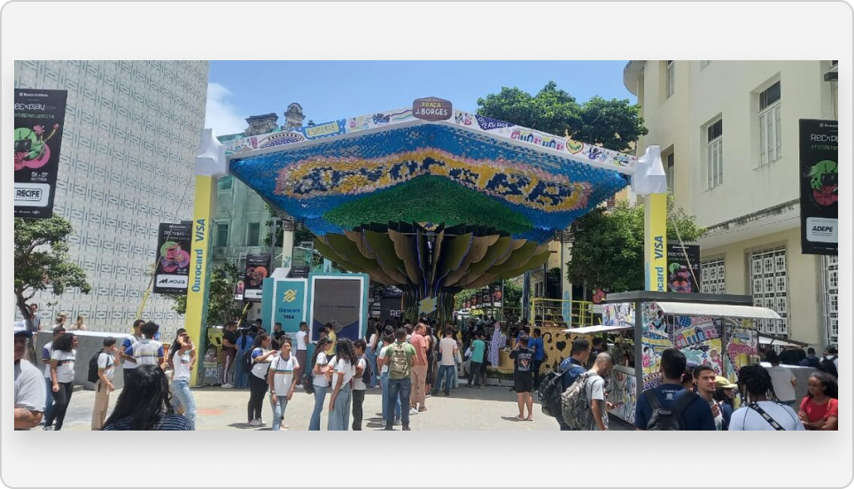
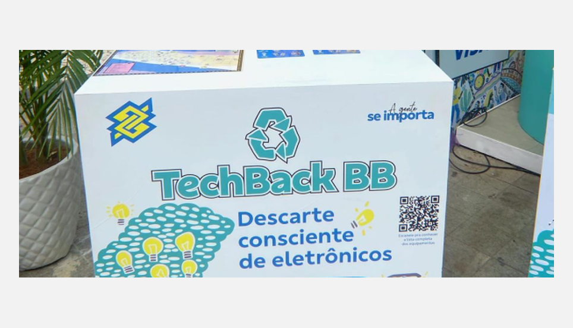
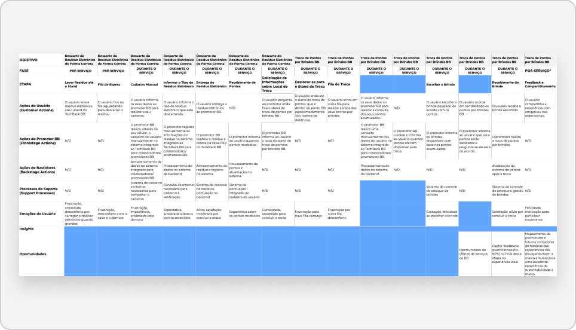
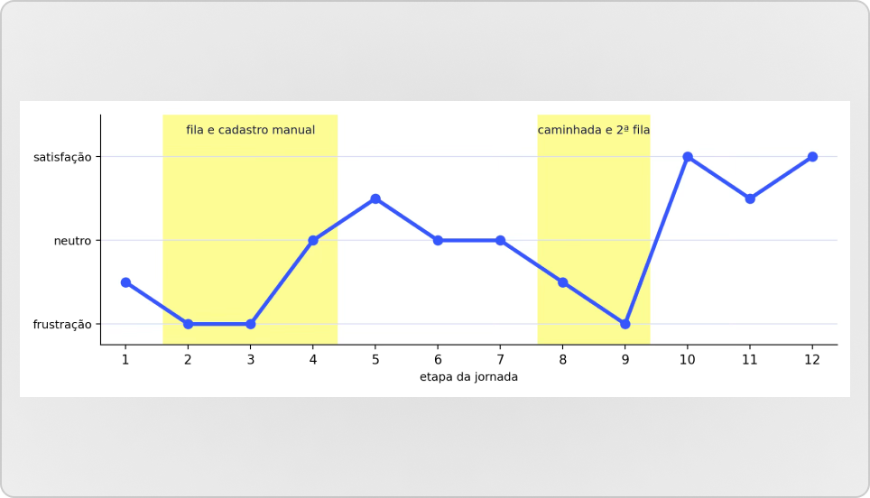
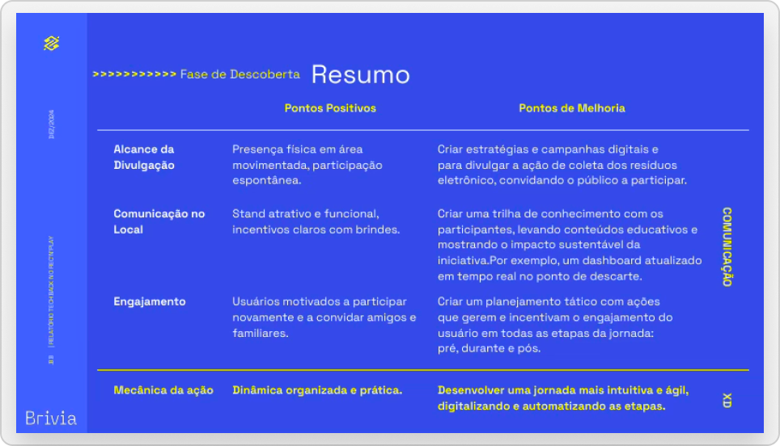
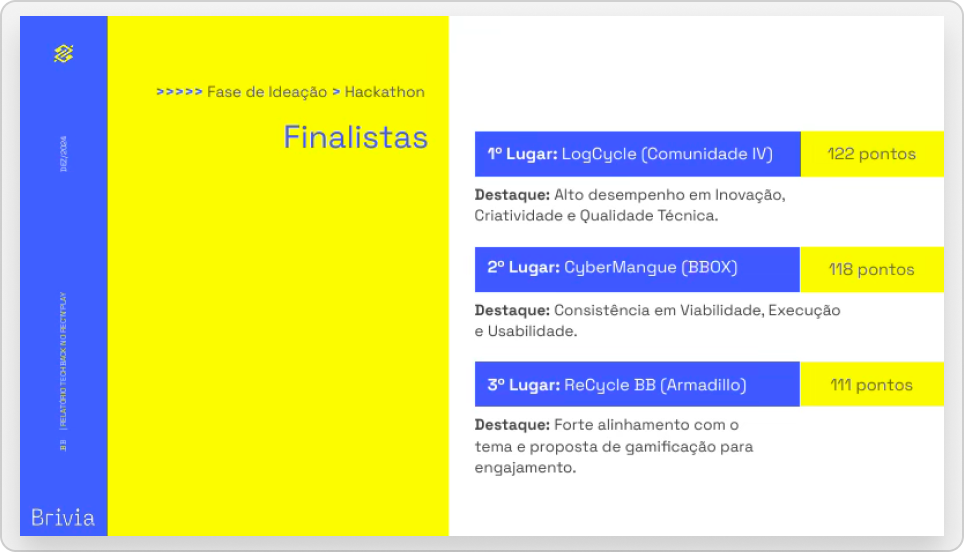
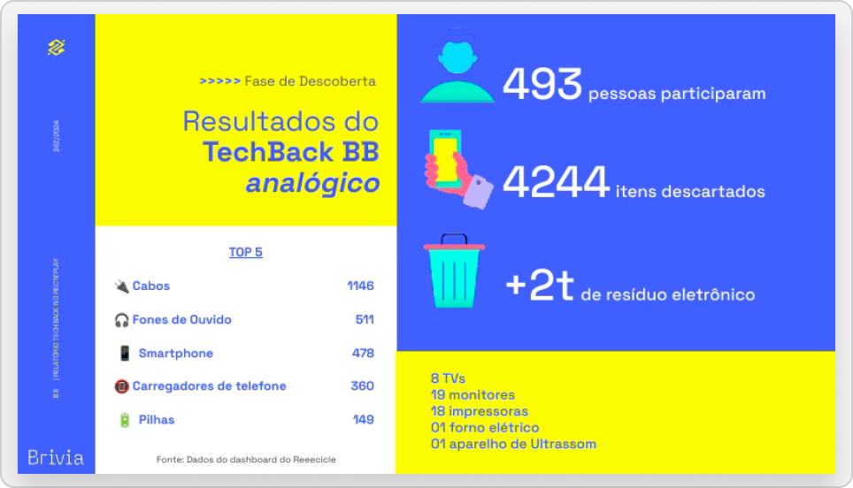
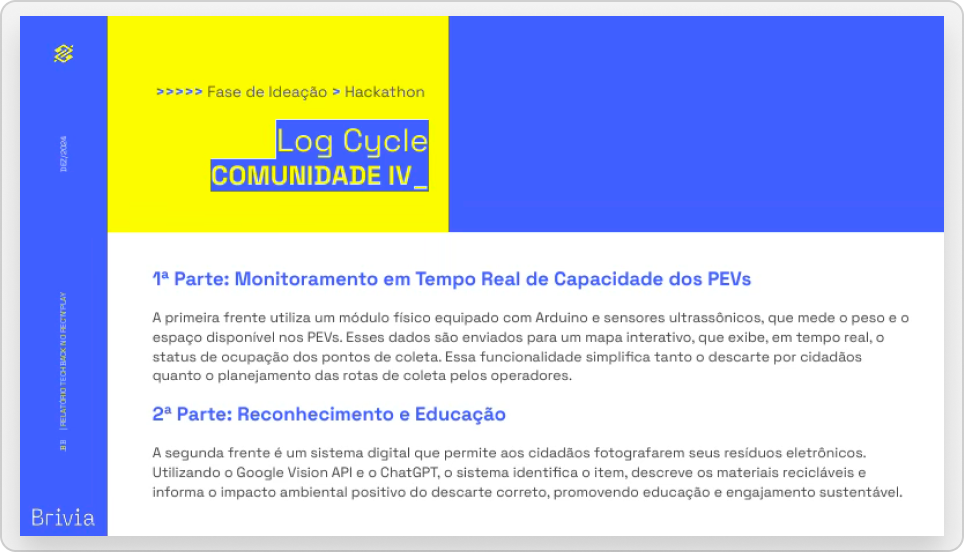

CASE 4 · TECHBACK BB (BANCO DO BRASIL)
Guerrilla Research in Sustainability
How open-air interviews at Rec'n'Play showed that e-waste disposal needed a self-service journey
- 493
- Participants in the analog TechBack at Rec'n'Play
- 4,244
- E-waste items discarded
- +2 t
- Of e-waste collected
Overview and challenge
In November 2024, Banco do Brasil took TechBack BB to Rec'n'Play, a festival in Recife: an initiative where people exchanged electronic waste for points and gifts, with support from Reeecicle. Brazil is the 5th largest generator of e-waste in the world, but only 3% is disposed of correctly.
BB wanted to know whether people would adopt this behavior and whether disposal could be automated. In parallel, a Hackathon was proposing computer vision solutions. My challenge was to understand, in a few days and with no prior research structure, how the experience already worked in practice, in order to guide the digital TechBack.
My role
As UX Lead and Hackathon mentor, I went to Recife to support the teams. To produce something more valuable than mentoring alone, I planned and ran, on my own initiative, a guerrilla research study at the TechBack stand. I acted as an observer, following research best practices, and turned each service interaction into a journey map. The findings gave me the grounds to advocate with stakeholders for deeper research.
Process
The work followed two phases of a UX methodology: discovery and ideation. In discovery, I researched the analog TechBack through observation, interviews and an as-is journey map. In ideation, I mentored and followed the Hackathon teams, who proposed computer vision solutions to recognize the waste. Validation and design were left for the next stages of the project.
Activities
Below are some of the activities and stages I carried out in this case.
Hackathon Mentoring
I supported the teams of Hackathon BB 2024 (November 7 and 8, at Porto Digital), whose challenge was to recognize electronics for disposal using computer vision.Non-participant Observation
I followed real service interactions at the Ponto BB stand, in Recife Antigo, from November 6 to 8, recording actions, backstage activity and emotions at each step.Guerrilla Interviews
After each interaction, I interviewed people who had exchanged electronics for gifts, using open questions defined in advance to avoid leading answers.


As-Is Journey Map
I recorded 12 steps, from disposal to exchanging points for gifts, with user and promoter actions, backstage, support processes and emotions. Post-service was not mapped.Emotion Curve
I cross-referenced the recorded emotions and found two blocks of frustration: the queue and manual registration at the start, and a walk of about 300 m with a second queue to redeem the points.


Synthesis in Four Axes
I organized the findings into reach of promotion, on-site communication, engagement and mechanics of the initiative, with strengths and improvement points for each.Analysis of the Hackathon Solutions
I analyzed the solutions presented. LogCycle (122 points) took 1st place, followed by CyberMangue (118) and ReCycle BB (111), and I extracted the overall insights.


Results


Spontaneous adoption proven
The 493 participants discarded 4,244 items, over 2 tonnes of e-waste. The users interviewed came without planning to and said they would do it again and bring friends.
Clear diagnosis of the journey
The as-is map showed friction in manual registration, two queues and a 300 m walk. The conclusion: people are willing to dispose of e-waste correctly, but the journey lacks autonomy.
Input for the digital TechBack
The findings and the Hackathon insights (computer vision, gamification, hybrid solutions, environmental education and ESG partnerships) became the December 2024 report, with next steps.
A case for going deeper
The research was shallow by nature, but it proved adoption and paved the way to advocate for structured, in-depth research.
Insights
People already want to dispose
Participants came without planning to and were willing to repeat it and invite friends. The behavior exists; it just needs to be made easier.
The friction is in the mechanics
Manual registration, two queues and a 300 m walk produced the most negative emotions. One user asked for a QR code for pre-registration.
Education and engagement were missing
Users wanted to know the environmental impact, and there was no invitation to share on social media. They also asked for more varied gifts linked to sustainability.
Learnings
Observe before proposing
Following real interactions revealed friction the briefing did not mention, such as the second queue and the walk between stands.
Going beyond scope creates an artifact
Mentoring became research, and research became evidence to advocate for the next step with stakeholders.
Shallow research also moves decisions
The guerrilla study was superficial by nature and the event conditions may have influenced what people reported. Even so, it gave the product direction.
Ideas and Opportunities
Ideas fell into three groups.
Journey
Pre-registration by QR code, automatic waste identification by computer vision and automatic point credit, with no second queue.
Engagement
A real-time impact dashboard at the disposal point, a hashtag and social media challenges, and an NPS survey at the end of the experience.
Rewards
More varied gifts aligned with sustainability, and Livelo points.